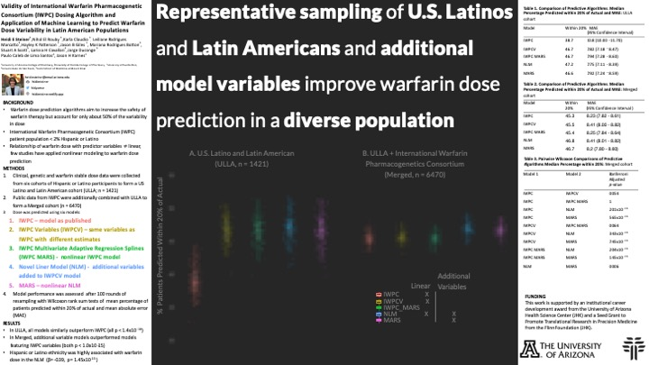

I’ve been MIA! Grad school is exhausting! Alas, it’s summer 2021 and I’m back to update my site with some w’s!
I presented my work on warfarin stable dose prediction in a diverse population featuring a large proportion of Hispanic/Latino reporting warfarin users at the ASCPT 2021 Annual Meeting (,virtually). I was selected as a Presidential Trainee Award winner and was given an hour long Q&A session about my work! In addition my poster was selected as a Top Poster and featured a blue ribbon icon during poster viewings. Best part? They paid me!
My poster was also featured during the Machine Learning (NOTE: not the official title of this event) Poster Walk during the ASCPT meeting.
The moral of this science story is: self-select for awards.
